无视觉灵巧操作：仅凭本体感知实现人形机器人全身操作
Blind Dexterity: Whole-Body Humanoid Manipulation via Pure Proprioception
第 1 页Page 1PDF p.1
Blind Dexterity: Whole-Body Humanoid Manipulation via Pure Proprioception
盲态灵巧操作：基于纯本体感觉的全身人形机器人操作
Aditya Bhatt\(^{1,3}\), Oleg Kaidanov\(^{1,3}\), Puze Liu\(^{1,3,4}\), and Jan Peters\(^{1,2,3,5}\)
Aditya Bhatt\(^{1,3}\)、Oleg Kaidanov\(^{1,3}\)、Puze Liu\(^{1,3,4}\) 和 Jan Peters\(^{1,2,3,5}\)
1Intelligent Autonomous Systems Lab, TU Darmstadt 2hessian.AI 3German Research Center for AI (DFKI)
1Intelligent Autonomous Systems Lab, TU Darmstadt 2hessian.AI 3German Research Center for AI (DFKI)
- 4Tongji University, Shanghai Research Institute for Autonomous Intelligent Systems 5Robotics Institute Germany
- 4Tongji University, Shanghai Research Institute for Autonomous Intelligent Systems 5Robotics Institute Germany
https://aditya.bhatts.org/BlindDexterity/
https://aditya.bhatts.org/BlindDexterity/

Fig. 1: A . A humanoid robot mounts a randomly positioned skateboard. Additionally, the robot is blindfolded ; it locates and manipulates the randomly positioned skateboard by feel with its feet, without relying on any tactile sensors, force/torque sensors, cameras, or tracking markers. B . The blind robot, equipped with only plastic rectangles for hands, locates and lifts a randomly placed drill suitcase by its handle, purely through proprioception.
图 1：A. 人形机器人登上随机放置的滑板。此外，机器人被蒙上双眼；它通过双脚的感觉来定位并操作随机放置的滑板，而不依赖任何触觉传感器、力/力矩传感器、相机或追踪标记点。B. 这台双手仅安装了矩形塑料块的盲态机器人，纯粹通过本体感觉定位并通过把手提起随机放置的电钻手提箱。
Abstract — We present blind, whole-body manipulation skills on a Unitree G1 humanoid using only onboard proprioception, without cameras, markers, force-torque, or tactile sensors. Despite this minimal sensing, the trained policies exhibit surprising capability across qualitatively different tasks: push-resilient bipedal walking without IMU feedback, active soccer ball trapping with a foot, seeking and lifting a suitcase by its handle, and mounting a randomly positioned skateboard.
摘要 — 我们在 Unitree G1 人形机器人上展示了仅使用机载本体感觉的盲态全身操作技能，未借助相机、标记点、力/力矩传感器或触觉传感器。尽管感知配置如此简朴，训练出的策略在性质各异的任务中展现出了令人惊叹的能力：无需 IMU 反馈的抗推搡双足行走、用脚主动停足球、搜寻并提拿手提箱把手，以及登上随机放置的滑板。
We argue that these capabilities arise from a key underappreciated signal: the way the joint encoder readouts evolve under purposeful compliant contact, effectively forming a whole-body tactile channel. By generating contact-rich motions, the trained policies actively probe the environment; as a result, taskrelevant object state (e.g. pose) becomes increasingly decodable from short proprioceptive histories. We expose this information using compact task-specific state estimators trained alongside, but fully separately from, the policies; their prediction errors decrease rapidly after informative contact.
我们认为，这些能力源于一个关键却常被低估的信号：关节编码器读数在有目的的顺应性接触下的演变方式，这实际上构成了一个全身触觉通道。通过生成富接触运动，训练出的策略能够主动探测环境；因此，从简短的本体感觉历史中，任务相关的物体状态（例如位姿）变得越来越容易被解码。我们使用与策略一同训练但完全独立的紧凑型特定任务状态估计器揭示了这一信息；在发生提供有效信息的接触后，它们的预测误差迅速下降。
Our results indicate that joint encoder-based proprioception, combined with compliant actuation—now widely available on commercial robots and low-cost motors—is already a strong, practical substrate for whole-body dexterous manipulation and interactive perception, and therefore a natural foundation on which richer sensing can be layered.
我们的结果表明，基于关节编码器的本体感觉与顺应性驱动（目前已在商用机器人和低成本电机上广泛普及）相结合，已然构成了全身灵巧操作与交互式感知的强大且实用的基底，因而是叠加更丰富感知的天然基础。
I. INTRODUCTION
I. 引言
Legged humanoid robots now routinely perform blind locomotion relying almost exclusively on proprioceptive feedback and learned control policies. These systems traverse rough terrain, stairs, and unexpected disturbances without cameras or depth sensors, suggesting that proprioception already encodes rich information about ground contact and robot state [1]. However, manipulation research on similar platforms strongly relies on exteroception, such as multiple body-mounted cameras [2]. At the same time, there is a rapid proliferation of tactile skins and force/torque sensors, which treat touch as a separate sensing modality that must be added to the robot. This discrepancy between locomotion and manipulation approaches raises a basic question: to what extent can a humanoid robot manipulate and perceive its environment using only its internal proprioception?
如今，足式人形机器人已能常规化地执行盲态运动，其几乎完全依赖本体感觉反馈和学习得到的控制策略。这些系统在没有相机或深度传感器的情况下即可穿越崎岖地形、楼梯并抵御意外扰动，这表明本体感觉已经编码了关于地面接触和机器人状态的丰富信息 [1]。然而，类似平台上的操作研究却强烈依赖外感知，例如安装在机身上的多个相机 [2]。与此同时，触觉皮肤和力/力矩传感器迅速普及，它们将触觉视为必须附加到机器人上的独立传感模态。运动与操作方法之间的这种差异引发了一个根本问题：人形机器人仅使用其内部本体感觉，能在多大程度上操作并感知其环境？
In this study, we venture in a direction opposite to that of current work—we avoid cameras, optical tracking markers, tactile skins, force/torque sensors, etc.—and explore how far we can push humanoid manipulation with proprioception
在本研究中，我们尝试了一个与当前工作相反的方向——摒弃了相机、光学追踪标记点、触觉皮肤、力/力矩传感器等——探索仅凭本体感觉
展开第 1 页原版整页（含全部图表、公式与页眉页脚）
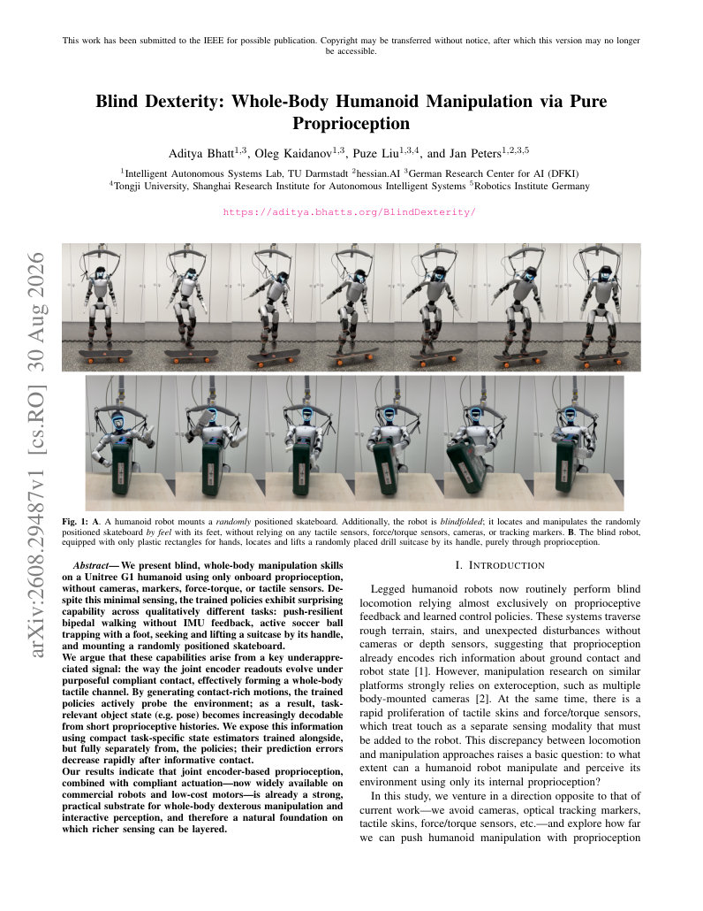
第 2 页Page 2PDF p.2
alone. We find that a commercial legged humanoid equipped with joint encoders and PD-controlled actuation is surprisingly capable. Our contributions are mainly empirical and partly methodological. First, using the Unitree G1 robot, we show that policies restricted to onboard proprioception can solve a suite of blind dexterity tasks: (1) push-resilient bipedal walking without IMU input, (2) active football trapping with a foot, (3) dynamic localization and mounting of a skateboard, and (4) finding and lifting a suitcase by its handle. The manipulation policies use joint encoders and the stock IMU, but no cameras, object tracking, force/torque sensors, or tactile sensors. Second, as an analysis tool, we train auxiliary estimators that map short proprioceptive histories to task-relevant features such as object pose, quantifying how much object-centric information becomes decodable after contact. Together, our findings suggest that encoderbased contact signals are a surprisingly strong baseline for dexterous manipulation.
能将人形机器人操作推进到何种程度。我们发现，配备关节编码器和 PD 控制驱动的商用足式人形机器人展现出了令人惊叹的能力。我们的贡献主要是实证层面的，部分是方法论层面的。首先，使用 Unitree G1 机器人，我们表明受限于机载本体感觉的策略可以解决一系列盲态灵巧操作任务：(1) 无需 IMU 输入的抗推搡双足行走、(2) 用脚主动停足球、(3) 动态定位并登上滑板，以及 (4) 寻找并通过把手提起手提箱。操作策略仅使用关节编码器和出厂自带的 IMU，而不使用相机、物体追踪、力/力矩传感器或触觉传感器。其次，作为一种分析工具，我们训练了辅助估计器，将简短的本体感觉历史映射到诸如物体位姿等任务相关特征，量化了在接触发生后有多少以物体为中心的信息变得可解码。综上所述，我们的研究结果表明，基于编码器的接触信号是灵巧操作中一个极其强大的基准线。
We argue that our pure-proprioception policies can achieve these capabilities thanks to a policy design choice that is already widespread in legged-robot RL: the inclusion of previously commanded joint targets in the policy’s observations. As the deflection between commanded and measured joint angles is proportional to torque, purposeful motions under compliant control expose torques and contact events through the very same joint encoder signals used for locomotion. As we show, this allows policies to employ active perception strategies that actively touch the environment and refine estimates over time. By contrast, policies that do not observe previous actions struggle to exploit this signal effectively.
我们认为，我们的纯本体感觉策略之所以能实现这些能力，得益于足式机器人强化学习中已广泛应用的一项策略设计选择：在策略的观测中包含先前下发的关节目标指令。由于指令关节角与实测关节角之间的偏差与力矩成正比，顺应性控制下的有目的运动通过用于移动行走的完全相同的关节编码器信号，揭示了力矩和接触事件。正如我们所展示的，这使得策略能够采用主动感知策略，主动触碰环境并随时间推移不断精炼估计。相比之下，不观测先前动作的策略则难以有效利用这一信号。
Proprioception is already fused with vision in many modern learned manipulation systems, yet the contribution of each modality is rarely isolated. The tolerance of our blind policies to randomized object poses in simulation, together with their qualitatively validated hardware transfer, suggests that encoder-based contact signals are a useful complement to vision under occlusion and poor lighting.
在许多现代基于学习的操作系统中，本体感觉已经与视觉进行了融合，但各个模态的贡献却很少被单独分离评估。我们的盲态策略在仿真中对随机物体位姿表现出的容忍度，以及在硬件迁移中经过定性验证的效果表明，在遮挡和恶劣光照条件下，基于编码器的接触信号是对视觉的有益补充。
II. RELATED WORK
II. 相关工作
Proprioceptive Sensing : Recent work has demonstrated that proprioceptive feedback alone can be sufficient for robust legged locomotion in challenging environments. [1] first trained policies to climb stairs with a bipedal robot, showing that a history of joint states and contact events contains sufficient information to implicitly encode local terrain properties necessary for stability. Such work has been extended to online adaptation, as done in Rapid Motion Adaptation (RMA) [3], bipedal locomotion [4], and manipulator arms [5], confirming that proprioceptive residuals contain a rich signature of the physical world. A complementary line of work estimates whole-body contact locations and external forces from existing joint sensors [6], [7]. We instead study closed-loop whole-body humanoid behaviors, using separate estimators only to probe what task-relevant object state becomes decodable from proprioceptive histories generated by task-driven interaction.
本体感知：近期研究表明，仅凭本体感觉反馈就足以在具有挑战性的环境中实现鲁棒的足式运动。[1] 首次训练了双足机器人爬楼梯的策略，表明关节状态和接触事件的历史包含了充分的信息，足以隐式编码维持稳定性所必需的局部地形特性。此类工作已被扩展至在线自适应，例如快速动作自适应（Rapid Motion Adaptation, RMA）[3]、双足运动 [4] 以及机械臂 [5]，证实了本体感觉残差包含物理世界的丰富特征。另一条互补的研究路线则是利用现有关节传感器估计全身接触位置与外力 [6]、[7]。与此不同，我们研究的是闭环全身人形机器人行为，仅使用独立的估计器来探究通过任务驱动的交互所生成的本体感觉历史中，有哪些任务相关的物体状态变得可解码。
Recent learning-based approaches such as SoftMimic [8] and GentleHumanoid [9] have integrated impedance control principles into whole-body reinforcement learning, enabling advanced skills like hugging and sit-to-stand assistance. These approaches typically use compliance to improve stability and safety; in contrast, our work treats compliant joint-space dynamics—and the resulting deflections—as an informative sensing channel for interactive perception and manipulation. Very closely related to our work, [10] train simulated robots to reach and manipulate objects without vision or position sensing, mainly through proprioception and simplified tactile sensors. However, they do not transfer these to the real world.
近期诸如 SoftMimic [8] 和 GentleHumanoid [9] 等基于学习的方法已将阻抗控制原理融入全身强化学习中，从而实现了拥抱和起坐辅助等高级技能。这些方法通常利用顺应性来提升稳定性和安全性；相比之下，我们的工作将顺应性关节空间动力学——以及由此产生的偏差——视为用于交互式感知与操作的富信息传感通道。与我们工作极为密切相关的是，[10] 训练仿真机器人主要通过本体感觉和简化触觉传感器在没有视觉或位置感知的情况下触及并操作物体。然而，他们并没有将这些迁移到现实世界中。
Tactile Sensing, Active Touch, and Interactive Perception : Tactile sensing has a long history as a modality for perceiving shape, material, and other latent object properties. Vision-based tactile sensors such as GelSight and its successors measure deformations of a soft elastomer to reconstruct fine-grained contact geometry and, by extension, contact forces and slip, at extremely high spatial resolution [11], [12].
触觉传感、主动触觉与交互式感知：触觉传感作为感知形状、材质及其他潜在物体属性的模态具有悠久的历史。基于视觉的触觉传感器（例如 GelSight 及其后续研究）通过测量柔软弹性体的形变，以极高的空间分辨率重建细粒度的接触几何，并进而重构接触力与滑动 [11]、[12]。
Informative tactile signals arise from purposeful, temporally extended motion and contact strategies rather than from single static touches [13], [11]. Interactive perception work explored using contact to recognize objects or infer properties such as mass and rigidity through exploratory actions [14], [15]. Our work is directly inspired by these principles, but instead of adding specialized tactile hardware, we ask how far one can go by reinterpreting compliant PD control and proprioception as a low-resolution, whole-body, active tactile sensor [6], and by training policies that learn their own exploratory strategies.
提供丰富信息的触觉信号源自具有目的性且在时间上延展的运动与接触策略，而非单次静态接触 [13]、[11]。交互式感知研究探索了通过探索性动作利用接触来识别物体或推断质量与刚度等属性 [14]、[15]。我们的工作直接受到这些原理的启发，但我们并没有增加专用的触觉硬件，而是探究如果将顺应性 PD 控制和本体感觉重新诠释为一种低分辨率、全身的主动触觉传感器 [6]，并通过训练自主学习探索策略的策略，究竟能够走多远。
III. SYSTEM AND PROBLEM FORMULATION
III. 系统与问题表述
Our experiments use a Unitree G1 humanoid robot with built-in proprioceptive feedback, namely the IMU readings and encoder-reported joint position and velocity at each actuator. The built-in low-level controllers expose a PD interface: at each cycle, our policy outputs desired joint positions, and the servos track them using fixed or configurable gains. We do not use cameras, depth sensors, force/torque sensors, or tactile arrays, and in some experiments we also withhold inertial data such as base orientation and angular velocity. Throughout, pure proprioception denotes policies restricted to onboard internal sensing; encoder-only is reserved for variants that explicitly remove the IMU.
我们的实验使用了一台具备内置本体感觉反馈的 Unitree G1 人形机器人，即 IMU 读数以及每个执行器上编码器报告的关节位置和速度。内置的底层控制器提供了一个 PD 接口：在每个周期，我们的策略输出期望关节位置，伺服系统则使用固定或可配置的增益对其进行跟踪。我们不使用相机、深度传感器、力/力矩传感器或触觉阵列，在某些实验中我们甚至去除了诸如基座朝向和角速度等惯性数据。在全文中，“纯本体感觉”（pure proprioception）指受限于机载内部感知的策略；“仅编码器”（encoder-only）则专用于显式移除 IMU 的变体。
A. Problem Statement
A. 问题陈述
We formulate each task as a partially observable Markov decision process. The actor observes onboard proprioception and previous actions, while object pose and physical parameters remain latent. We train a policy \(\pi_\theta(a_t\mid o_{\leq t})\) to maximize expected return on contact-rich loco-manipulation tasks.
我们将每个任务形式化为部分可观测马尔可夫决策过程。行动器观测机载本体感觉和先前的动作，而物体位姿和物理参数保持为潜在变量。我们训练策略 \(\pi_\theta(a_t\mid o_{\leq t})\) 以最大化在富接触移动操作任务上的期望回报。
Within this framework, we ask two questions. First, can manipulation tasks involving substantial spatial uncertainty be solved using only onboard proprioception and compliance, without exteroceptive or dedicated tactile sensing? Second,
在此框架内，我们提出了两个问题。首先，在不具备外感知或专用触觉感知的情况下，仅使用机载本体感觉与顺应性，能否解决涉及显著空间不确定性的操作任务？其次，
展开第 2 页原版整页（含全部图表、公式与页眉页脚）
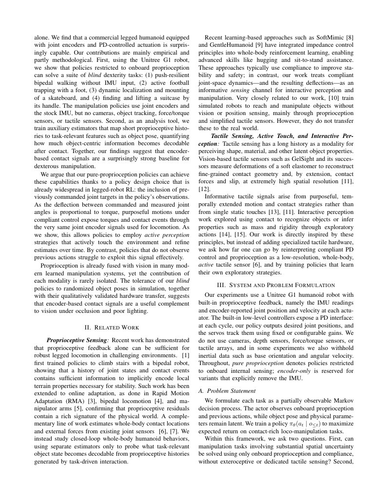
第 3 页Page 3PDF p.3
how much task-relevant object state becomes decodable from short proprioceptive histories after contact, and does explicit estimator feedback improve control?
在接触发生后，从简短的本体感觉历史中能够解码出多少任务相关的物体状态？显式估计器反馈是否能改善控制？
IV. METHODS
IV. 方法
A. Reinforcement Learning Formulation
A. 强化学习形式化
We train policies in simulation with deep reinforcement learning and deploy them on the real robot. Each policy maps a short history of recent proprioceptive observations and actions to an action using a feedforward MLP, which suffices given the short time horizons over which contacts and deflections matter. The reward encourages task completion, balance, and smooth motion, with shaping terms for safety and to penalize excessive joint velocities and joint limit violations. At each time step \(t\), the robot provides an observation \(o_t\) and receives an action \(a_t\). The observation includes measurements available to the onboard sensors, namely the joint positions \(q_t\) and velocities \(\dot{q}_t\) reported by the encoders, the projected gravity vector and angular velocity at the IMU, as well as the action commanded at the previous time step \(a_{t-1}\).
我们在仿真中使用深度强化学习训练策略，并将其部署到真实机器人上。每个策略利用前馈 MLP 将近期的本体感觉观测与动作的简短历史映射为动作，鉴于接触和偏差起作用的时间跨度较短，这已足够有效。奖励函数鼓励完成任务、保持平衡和运动平滑，并带有用于保证安全、惩罚过大关节速度及超出关节限位的整形项。在每个时间步 \(t\)，机器人提供观测 \(o_t\) 并接收动作 \(a_t\)。该观测包括机载传感器可获取的测量值，即编码器报告的关节位置 \(q_t\) 和速度 \(\dot{q}_t\)、IMU 处的投影重力向量和角速度，以及在上一时间步下发的动作 \(a_{t-1}\)。
At time \(t\), we define a history window
在时间 \(t\)，我们定义一个历史窗口
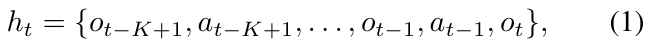
where \(K\) is the history length. The policy \(\pi(a_t|h_t)\) maps \(h_t\) to an action \(a_t\) specifying desired joint positions \(q^{\text{des}}_t\).
其中 \(K\) 为历史长度。策略 \(\pi(a_t|h_t)\) 将 \(h_t\) 映射到指定期望关节位置 \(q^{\text{des}}_t\) 的动作 \(a_t\)。
t. Implicit contact signal: The actor observes \(q_t^{\mathrm{rel}}\), \(\dot q_t\), and the previous position action \(a^q_{t-1}\),andcanthereforerecover the preceding joint-tracking residual \(e_t=q^{\mathrm{des}}_{t-1}-q_t=0.25a^q_{t-1}-q_t^{\mathrm{rel}}\). Under position-PD control,\(\tau_t^{\mathrm{PD}}\approx K_{p,t}e_t-K_d\dot q_t\). External contact consequently alters the observed residual dynamics, providing a noisy, spatially coarse proxy for contact-induced joint loading without direct force or torque sensing. The short observation history exposes how this signal evolves during purposeful contact.
隐式接触信号：行动器观测到 \(q_t^{\mathrm{rel}}\)、\(\dot q_t\) 以及上一位置动作 \(a^q_{t-1}\)，因此能够恢复出前一关节跟踪残差 \(e_t=q^{\mathrm{des}}_{t-1}-q_t=0.25a^q_{t-1}-q_t^{\mathrm{rel}}\)。在位置-PD 控制下，\(\tau_t^{\mathrm{PD}}\approx K_{p,t}e_t-K_d\dot q_t\)。外部接触因此改变了观测到的残差动力学，在无需直接力和力矩感知的情况下，为接触诱发的关节负载提供了一个含噪声且在空间上较为粗糙的代理信号。简短的观测历史展现了这一信号在有目的的接触过程中如何演变。
Implementation details: We use Isaac Sim and the PPO implementation from RSL-RL [16]. To mitigate the simulation-reality gap, we apply domain randomization over physical parameters such as link masses, friction coefficients, and motor strengths. This helps ensure the learned policies and estimators remain robust to modeling errors and unmodeled contacts when transferred to the real robot.
实现细节：我们使用 Isaac Sim 以及来自 RSL-RL [16] 的 PPO 实现。为了缩小仿真与现实之间的差距，我们对连杆质量、摩擦系数和电机强度等物理参数应用了域随机化。这有助于确保学习到的策略和估计器在迁移到真实机器人时，对建模误差和未建模的接触保持鲁棒。
Policies operate at \(50\,\mathrm{Hz}\); simulation uses a physics time step of \(0.005\,\mathrm{s}\) and an action decimation of \(4\). Policy outputs = are mapped to desired joint positions according to \(q^{\mathrm{des}}_t=q^{\mathrm{default}}+0.25a_t\), with no additional clipping applied to \(a_t\). We use the same action mapping and nominal PD gains in simulation and on hardware, where the desired positions are tracked by the robot’s internal high-frequency low-level PD controller. The object-interaction policies use a history length of \(K=5\), corresponding to \(0.1\,\mathrm{s}\), while the locomotion policies use \(K=1\).
策略运行频率为 \(50\,\mathrm{Hz}\)；仿真使用的物理时间步长为 \(0.005\,\mathrm{s}\)，动作抽取倍率为 \(4\)。策略输出根据 \(q^{\mathrm{des}}_t=q^{\mathrm{default}}+0.25a_t\) 映射为期望关节位置，且未对 \(a_t\) 应用额外的截断。我们在仿真和硬件上采用相同的动作映射和标称 PD 增益，在硬件中期望位置由机器人内部的高频底层 PD 控制器进行跟踪。物体交互策略采用的历史长度为 \(K=5\)，对应 \(0.1\,\mathrm{s}\)，而运动策略采用 \(K=1\)。
Across all tasks, the actor and critic are MLPs with hiddenlayer sizes \([1024,512,256]\) and ELU activations. We use asymmetric actor–critic training: the critic receives the actor observations together with task-specific privileged simulator state, such as object pose and velocity expressed in the torso
在所有任务中，行动器（actor）和评论家（critic）均为具有隐藏层大小 \([1024,512,256]\) 和 ELU 激活函数的 MLP。我们采用非对称的 actor–critic 训练：评论家接收行动器观测以及特定于任务的特权仿真器状态，例如在躯干坐标系下表示的物体位姿和速度，
frame, whereas this privileged state is never provided to the deployed actor. Inputs are empirically normalized. PPO uses rollouts of 24 steps per environment, five learning epochs, four minibatches, discount factor \(\gamma=0.99\), GAE parameter \(\lambda=0.95\), clipping parameter \(0.2\), entropy coefficient \(0.001\), value-loss coefficient \(1.0\), and maximum gradient norm \(1.0\). The initial learning rate is \(3\times10^{-4}\) and is adapted online toward a target KL divergence of \(0.015\). All experiments use \(4096\) parallel simulation environments. Locomotion and football policies are trained for \(5000\) PPO iterations, suitcase policies for \(6000\) iterations, and skateboard policies for \(8000\) iterations. For each manipulation-policy evaluation reported in a table, we run \(4096\) independent simulation episodes; results are aggregated across the independently trained seeds specified in the corresponding table caption.
而部署的行动器则绝不会获得这种特权状态。输入均经过经验归一化。PPO 每个环境采用 24 步的 rollout/轨迹展开、5 个训练周期（epochs）、4 个 mini-batch、折扣因子 \(\gamma=0.99\)、GAE 参数 \(\lambda=0.95\)、裁剪参数 \(0.2\)、熵系数 \(0.001\)、价值损失系数 \(1.0\) 以及最大梯度范数 \(1.0\)。初始学习率为 \(3\times10^{-4}\)，并在线自适应调整以朝向 \(0.015\) 的目标 KL 散度。所有实验均使用 \(4096\) 个并行仿真环境。运动和足球策略训练 \(5000\) 次 PPO 迭代，手提箱策略训练 \(6000\) 次迭代，滑板策略训练 \(8000\) 次迭代。对于表格中报告的每项操作策略评估，我们运行 \(4096\) 个独立的仿真回合（episodes）；结果基于相应表格标题中注明的独立训练随机种子进行汇总。
Complete task configurations, including reward functions, weights, and termination thresholds, will be released with the code.
完整的任务配置，包括奖励函数、权重和终止阈值，将随代码一同公开发布。
B. Variable Stiffness Control
B. 可变刚度控制
For suitcase +VS variants (Sec. V-D), the policy additionally outputs per-joint gain multipliers \(\alpha_t=\sigma(a_t^\alpha)\in(0,1)\), yielding
对于手提箱 +VS 变体（第 V-D 节），策略额外输出每个关节的增益乘子 \(\alpha_t=\sigma(a_t^\alpha)\in(0,1)\)，从而得到
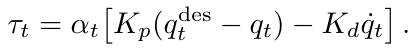
This permits softer contact search and stiffer insertion and lifting, while lower gains amplify contact-induced tracking deviations.
这允许在接触搜索阶段更柔软，而在插入和提起阶段更刚硬，同时较低的增益会放大接触引起的跟踪偏差。
C. Proprioceptive State Estimation
C. 本体感知状态估计
To understand the amount of information extractable from proprioception, we train an auxiliary estimator that maps a short history of proprioceptive observations to latent object properties. The estimator \(\phi\) takes the history \(h_t\) as input and outputs an estimate \(\hat{z}_t\) of task-specific state features of interest \(z_t\), such as the pose of an object relative to the robot’s base frame (whose ground-truth values must be available at training time as regression targets).
为了探究可从本体感知中提取的信息量，我们训练了一个辅助估计器，将本体感知观测的简短历史映射到物体的潜在属性。该估计器 \(\phi\) 以历史信息 \(h_t\) 作为输入，并输出感兴趣的特定任务状态特征 \(z_t\) 的估计值 \(\hat{z}_t\)，例如物体相对于机器人基坐标系的位姿（在训练时其真值必须可用，以作为回归目标）。
We implement \(\phi\) as an MLP with hidden-layer sizes \([256,256,256,128]\) and ELU activations. It receives exactly the same history \(h_t\) as its paired policy, and its output dimension is determined by the task-specific state target \(z_t\). The estimator optimizer uses the current adaptive PPO learning rate, keeping its learning rate synchronized with that of the policy throughout the training. We train the estimator with supervised learning on trajectories collected in simulation, simultaneously with the policy, using an L2 regression loss with empirically standardized targets:
我们将 \(\phi\) 实现为一个隐藏层大小为 \([256,256,256,128]\) 并采用 ELU 激活函数的 MLP。它接收与其配对策略完全相同的历史 \(h_t\)，其输出维度由特定任务的状态目标 \(z_t\) 决定。估计器的优化器采用当前的自适应 PPO 学习率，在整个训练过程中使其学习率与策略的学习率保持同步。我们在仿真收集的轨迹上通过监督学习与策略同步训练该估计器，并使用针对经验标准化目标的 L2 回归损失：
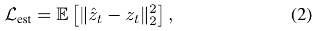
where \(z_t\) is the ground-truth state feature vector recorded from the simulator. During training, we empirically standardize both the inputs \(h_t\) and the regression targets \(z_t\) (perdimension zero mean and unit variance) to keep optimization well-conditioned.
其中 \(z_t\) 是从仿真器中记录的真值状态特征向量。在训练期间，我们对输入 \(h_t\) 和回归目标 \(z_t\) 均进行了经验标准化（每个维度零均值与单位方差），以保持优化过程处于良好条件。
Each estimator is task-specific and assumes the object family used during training; we do not claim category-level
每个估计器都是特定于任务的，并假定采用训练期间使用的物体族；我们并不宣称具有类别级
展开第 3 页原版整页（含全部图表、公式与页眉页脚）
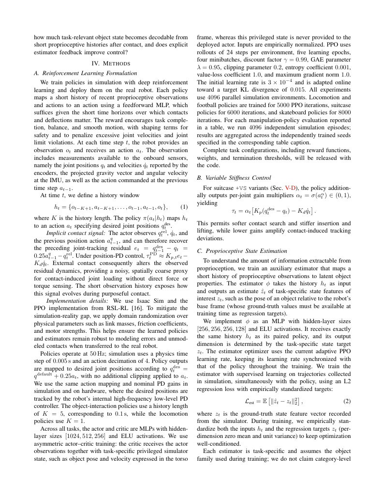
第 4 页Page 4PDF p.4
perception or generalization to unseen object geometries. It is a fully separate network with its own optimizer: the supervised loss is absent from the PPO objective and task reward, and no estimator-loss gradients reach the policy. Thus, in the reported -SE variants the estimator is purely diagnostic, while +SE appends its previous prediction into the observations only as an ablation.
感知能力或对未见物体几何形状的泛化能力。它是一个拥有独立优化器的完全分离的网络：PPO 目标和任务奖励中不包含监督损失，且没有任何估计器损失的梯度会传递给策略。因此，在所报道的 -SE 变体中，估计器纯粹用于诊断分析，而 +SE 仅作为消融实验将其先前的预测值追加到观测中。
V. EXPERIMENTS
V. 实验
We organize our empirical study as a suite of four tasks that progressively increase the demands placed on blind proprioceptive control. We train and evaluate all policies quantitatively in simulation, and deploy on the real robot for qualitative validation. We choose these tasks to expose different facets of the proposed “encoder-as-tactile” hypothesis.
我们将实证研究组织为一套共四个任务，逐步提高对纯本体感知控制的要求。我们在仿真中定量训练并评估所有策略，并将其部署在真实机器人上进行定性验证。我们选择这些任务是为了展示所提出的“编码器即触觉”假设的不同层面。
Unless otherwise stated, each manipulation task uses a proprioceptive observation space consisting of the standard set of observations commonly provided to locomotion policies in the literature: the projected gravity, the angular velocity at the IMU, joint positions, joint velocities, and the previously commanded joint targets. For each task, we also include real-world photos and videos of the Unitree G1 executing representative episodes, to confirm that the corresponding policies transfer to the real world without vision or tactile sensors.
除非另有说明，每个操作任务使用的本体感知观测空间均由文献中通常提供给运动策略的标准观测集组成：投影重力、IMU 处的角速度、关节位置、关节速度以及先前下达的关节目标指令。对于每个任务，我们还附上了 Unitree G1 执行代表性回合的现实世界照片和视频，以证实相应策略能够在无需视觉或触觉传感器的情况下迁移到真实世界。
A. IMU-Free Walking and Push Recovery
A. 无 IMU 行走与推扰恢复
Humanoid locomotion policies typically rely on IMU signals (projected gravity and angular velocity), often along with the previous action. As an opening experiment, we use a standard locomotion task to illustrate a simple point: policies can infer ground orientation through the feet from joint encoders alone, enabling IMU-free walking. We train policies with three different observation variants: (1) +IMU+PE (including IMU measurements as well as previous actions \(a_{t-1}\)), (2) -IMU+PE (no IMU, but with \(a_{t-1}\)), and (3) -IMU-PE (no IMU, no \(a_{t-1}\)). All policies observe joint positions \(\boldsymbol{q}_t\) and velocities \(\boldsymbol{\dot{q}}_t\). In parallel, we train a state estimator (SE) to predict inertial readings—projected gravity, angular velocity, and linear velocity—from the same inputs.
人形机器人运动策略通常依赖于 IMU 信号（投影重力和角速度），且通常还会结合上一动作。作为开篇实验，我们通过一个标准运动任务来说明一个简单的观点：策略仅凭关节编码器就能通过足部推断出地面朝向，从而实现无 IMU 行走。我们训练了具有三种不同观测变体的策略：(1) +IMU+PE（包含 IMU 测量值以及上一动作 \(a_{t-1}\)），(2) -IMU+PE（无 IMU，但包含 \(a_{t-1}\)），以及 (3) -IMU-PE（无 IMU，亦无 \(a_{t-1}\)）。所有策略均观测关节位置 \(\boldsymbol{q}_t\) 和速度 \(\boldsymbol{\dot{q}}_t\)。与此同时，我们训练了一个状态估计器（SE），以从相同输入中预测惯性读数——投影重力、角速度和线速度。
Analysis. All policies learn locomotion in simulation and transfer to the real robot. The IMU-free policy is less robust than the IMU-equipped one, but the robot still maintains balance and recovers from pushes. To the best of our knowledge, this is the first real-world demonstration of push-resilient bipedal humanoid locomotion whose policy receives only joint-encoder measurements, unlike prior IMU-free work that relied on ankle F/T sensors [17], [18].
分析。所有策略均在仿真中学会了运动并迁移到了真实机器人上。无 IMU 策略的鲁棒性虽不及配备 IMU 的策略，但机器人仍能保持平衡并从推扰中恢复。据我们所知，这是首次在真实世界中展示仅依靠关节编码器测量值作为策略输入的抗推扰双足人形机器人运动，不同于以往依赖踝关节力/力矩（F/T）传感器的无 IMU 工作 [17], [18]。
Fig. 2 compares different observation sets in simulation under a large external velocity impulse at 5s. The IMUequipped policy is most robust, showing minimal deviation in the projected gravity vector. The -IMU+PE policy also recovers, but with larger deviation, and its estimator reconstructs inertial measurements with reasonable accuracy. In contrast, the -IMU-PE policy fails to recover and shows large estimation errors.
图 2 比较了仿真中在 5s 受到较大外部速度冲量扰动时不同观测集的表现。配备 IMU 的策略最为鲁棒，投影重力向量的偏差最小。-IMU+PE 策略也能够恢复，但偏差更大，且其估计器能够以合理的精度重建惯性测量值。相比之下，-IMU-PE 策略未能恢复，并出现了较大的估计误差。
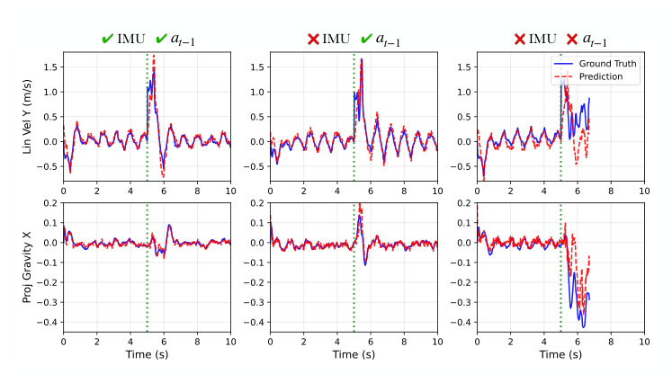
Fig. 2: Estimating inertial measurements from proprioception. In simulation, we command all three locomotion policies to stand in place, perturb the robot with an identical velocity impulse at \(5s\), and compare the predictions of the proprioceptive estimator against the ground-truth inertial measurements. The left column depicts a policy trained with access to IMU readings as well as the last commanded joint positions, the policy in the middle column does not receive IMU readings, while the third policy is additionally deprived of the previously commanded actions.
图 2：基于本体感知估计惯性测量值。在仿真中，我们命令所有三种运动策略原地站立，在 \(5s\) 时施加完全相同的速度冲量扰动机器人，并将本体感知估计器的预测值与真值惯性测量值进行对比。左列展示了在训练中可获取 IMU 读数以及上一时刻指令关节位置的策略，中间列的策略不接收 IMU 读数，而第三种策略则在此基础上进一步被剥夺了先前指令动作。
We compare the push-recovery, velocity tracking, and inertial state-estimation mean-squared error in Table I. We find that the IMU-free policies are able to resist pushes, but their ability to track desired velocities is reduced. Upon removing the previous action from the observations, both the tracking performance and the ability to estimate inertial measurements are greatly reduced.
我们在表 I 中对比了抗推扰、速度跟踪以及惯性状态估计的均方误差。我们发现无 IMU 策略能够抵御推扰，但其跟踪期望速度的能力有所下降。在从观测中移除上一动作后，跟踪性能和估计惯性测量值的精度均显著降低。
These results indicate that commanded and measured joint positions and velocities encode information about body forces (e.g., ground-foot contact directions), allowing the policy to infer orientation and inertial state sufficiently for IMU-free walking.
这些结果表明，指令关节位置、测得的关节位置及其速度编码了有关身体受力（例如足底与地面的接触方向）的信息，使策略能够充分推断出姿态朝向与惯性状态，以实现无 IMU 行走。
TABLE I: Observation ablations for the locomotion policies. Results aggregated over 5 seeds (mean \(\pm\) std).
表 I：运动策略的观测消融实验。结果基于 5 个随机种子汇总（均值 \(\pm\) 标准差）。
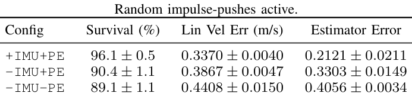
B. Active Football Localization and Trapping
B. 主动足球定位与停球
We now consider a legged manipulation task: the robot must localize a football placed randomly nearby and trap it under one foot. At the start of each episode, the ball’s position is sampled uniformly within a \(0.3\,\mathrm{m} \times 0.4\,\mathrm{m}\) rectangle in front of the robot. Unlike typical humanoid soccer policies, which almost always assume some form of ball tracker, our policy must localize the ball purely via touch at the foot.
我们现在考虑一个腿部操作任务：机器人必须定位附近随机放置的足球，并用一只脚将其停住。在每个回合开始时，球的位置在机器人前方 \(0.3\,\mathrm{m} \times 0.4\,\mathrm{m}\) 的矩形区域内均匀采样。与典型的人形机器人足球策略几乎总是假定某种形式的足球追踪器不同，我们的策略必须纯粹通过足部的触碰来定位足球。
The dominant task rewards place the right foot above the ball and maintain foot–ball contact; additional terms encourage balance and smooth motion. Lasting 6s, the training episodes terminate on falls, illegal body contact, excessive ball displacement or contact force, or excessive support-foot motion.
主要任务奖励促使右足置于球上方并保持足-球接触；附加项则鼓励保持平衡和平滑运动。训练回合持续 6s，在发生跌倒、非法身体部位接触、足球位移或接触力过大、或支撑足移动过大时提前终止。
To probe how much body-extrinsic information a policy can internally infer from proprioception alone, in this task and the next ones, we compare policies that differ only
为了探究策略仅凭本体感知能在内部推断出多少机体外部信息，在该任务以及后续任务中，我们比较了仅在
展开第 4 页原版整页（含全部图表、公式与页眉页脚）
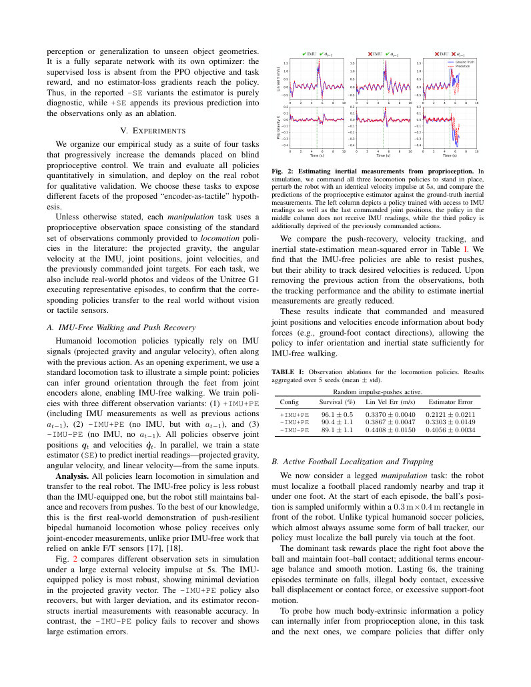
第 5 页Page 5PDF p.5
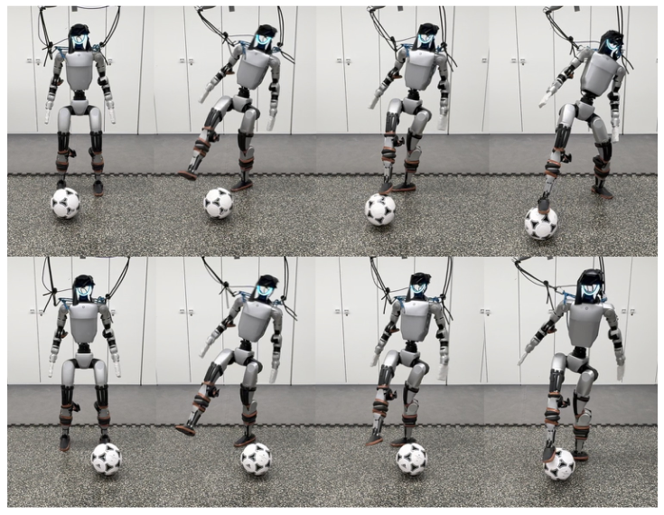
Fig. 3: Two football trapping episodes. The robot actively sweeps the region with one foot, makes contact, and traps the football underfoot.
图 3：两个停球回合。机器人用一只脚主动扫荡该区域，发生接触，并将足球停在脚下。
TABLE II: Policy and estimator performance on the football task. Aggregated over 5 random seeds (mean \(\pm\) std) and best seed.
表 II：策略与估计器在足球任务上的性能。基于 5 个随机种子汇总（均值 \(\pm\) 标准差）以及最佳种子。
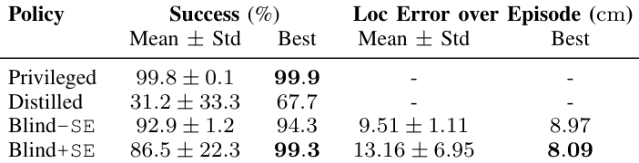
in the information they receive about the external object (ball, suitcase, skateboard). We consider four observation configurations: (1) Privileged, whose actor additionally receives the ground-truth object state and is trained using the same PPO recipe; (2) Distilled , a blind student that receives only a short history of proprioceptive inputs and imitates the privileged teacher using DAgger (a common practice to confront partial observability in robotic RL research); (3) Blind-SE , which uses the same proprioceptive inputs as Distilled but is trained with RL from scratch, jointly with a state estimator (SE) to analyze how well the object pose can be inferred from the available observations; and (4) Blind+SE , which additionally supplies the previous state estimate \(\hat{z}_{t-1}\) as input to the policy and estimator, allowing us to measure whether closing the loop through a learned latent state actually improves control over using raw histories alone. In all cases, the estimator’s inputs match those of the paired policy, and we use a fixed observation history of five timesteps (\(0.1\,\mathrm{s}\) at a \(50\mathrm{Hz}\) control rate).
接收到的外部物体（球、行李箱、滑板）信息上存在差异的策略。我们考虑四种观测配置：(1) Privileged，其行动器额外接收真值物体状态，并使用相同的 PPO 配方进行训练；(2) Distilled，一个仅接收本体感知输入的简短历史并使用 DAgger 模仿特权教师的盲学生策略（这是机器人强化学习研究中应对部分可观测性的常用做法）；(3) Blind-SE，使用与 Distilled 相同的本体感知输入，但通过强化学习从头开始训练，并与状态估计器（SE）联合训练，以分析从可用观测中推断物体位姿的效果；以及 (4) Blind+SE，其额外将上一时刻的状态估计值 \(\hat{z}_{t-1}\) 作为策略和估计器的输入，使我们能够衡量通过学到的潜在状态形成闭环相比仅使用原始历史是否确实能改善控制。在所有情况下，估计器的输入均与对应策略的输入保持一致，且我们采用固定为五个时间步的观测历史（在 \(50\mathrm{Hz}\) 控制频率下为 \(0.1\,\mathrm{s}\)）。
Analysis . Table II reports a quantitative comparison of the four policies, each aggregated over 5 independent training runs and evaluated over 4096 independent episodes. We consider an episode successful if the total contact time between the foot and the ball exceeds 1 s.
分析。表 II 汇报了四种策略的定量对比，每种策略均在 5 次独立训练运行中汇总，并在 4096 个独立测试回合上进行评估。如果足部与球的总接触时间超过 1 s，我们即认为该回合成功。
As expected, the teacher policy aims directly for the ball and traps it with a near-perfect success rate. We find that the distilled student policy merely plants its foot near the middle of the ball’s spawn distribution, a weak strategy that only succeeds when the ball appears near the center.
正如预期，教师策略直接对准球并在接近完美的成功率下将其停住。我们发现，蒸馏出的学生策略仅仅是将脚落在足球生成分布的中心附近，这是一种十分薄弱的策略，只有在球出现在中心附近时才能成功。
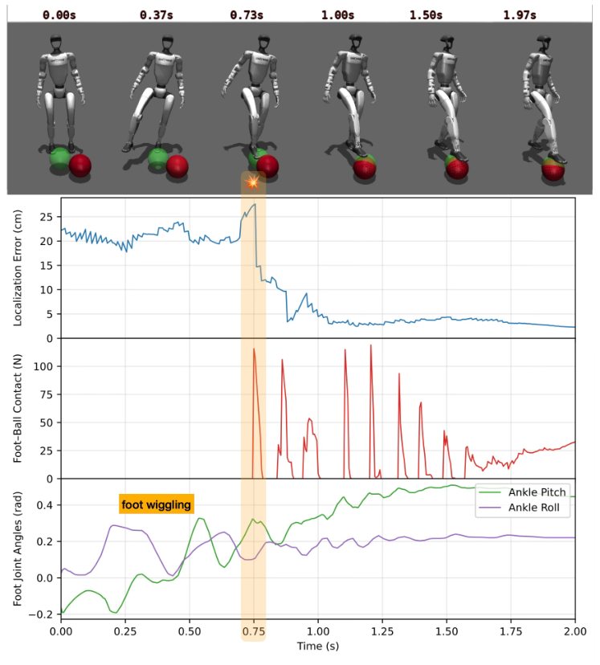
Fig. 4: Active football localization. The robot must find and trap a randomly placed football (red) with its right foot. We visualize the estimator’s predicted ball position in transparent green. The blind policy exhibits active seeking ; it lifts the foot and wiggles it at the ankle while sweeping the area; upon making the first contact with the ball (\(0.73\mathrm{s}\)) the estimate improves rapidly as the robot repeatedly taps the ball from above to stop it from rolling away, until it is firmly trapped with a localization error of less than \(2\mathrm{cm}\).
图 4：主动足球定位。机器人必须用右脚找到并停住随机放置的足球（红色）。我们将估计器预测的足球位置可视化为半透明绿色。盲策略表现出主动搜寻行为：它抬起脚并在扫荡该区域时晃动脚踝；在与球发生首次接触（\(0.73\mathrm{s}\)）时，随着机器人从上方反复轻踩足球以防其滚开，估计精度迅速提升，直至将球稳稳停住，定位误差小于 \(2\mathrm{cm}\)。
In contrast, the non-distilled blind policies (-SE and +SE) learn qualitatively different active seeking behavior: while each policy learns slightly different behaviors, they tend to systematically sweep the area with one foot, while wiggling it at the ankle, then turn toward and trap the ball upon contact. This is interactive perception : the robot actively moves to create informative contacts rather than passively reading incoming signals. Fig. 4 illustrates a representative episode of the blind control policy operating with estimator feedback. From the instant of first contact, the localization error drops sharply to approximately \(2~\mathrm{cm}\). That such a brief proprioceptive history of \(0.1~\mathrm{s}\) suffices for accurate ball localization explains the success of the policy: the encoder readings already contain sufficient information about object position, which any policy generating purposeful motions and informative contacts can, in principle, extract and exploit.
相比之下，非蒸馏盲策略（-SE 与 +SE）学到了在性质上截然不同的主动搜寻行为：尽管每个策略学到的行为略有不同，但它们倾向于用一只脚系统地扫荡该区域，同时晃动脚踝，并在接触到球后转向并将其停住。这就是交互式感知：机器人通过主动运动创造富含信息的接触，而不是被动读取传入的信号。图 4 展示了带有估计器反馈的盲控制策略运行的一个代表性回合。从初次接触的瞬间开始，定位误差急剧下降到约 \(2~\mathrm{cm}\)。仅凭 \(0.1~\mathrm{s}\) 这样简短的本体感知历史就足以实现精确的足球定位，这也解释了该策略成功的原因：编码器读数本身已经包含了有关物体位置的充足信息，原则上任何能够产生有目的运动并创造丰富信息接触的策略都可以提取并利用这些信息。
The blind +SE policy performed slightly worse than -SE on average, as one run out of the five seeds was slow to learn this behavior; however, the best performing seed does use state estimate feedback. We attribute this variability mainly to the poor state estimates early in training, which could distract or bias early exploration of the +SE agent, while the -SE agent cannot be distracted by such a bias.
盲 +SE 策略的平均性能略逊于 -SE，因为 5 个随机种子中有一次运行学习这种行为较慢；然而，表现最佳的种子确实使用了状态估计反馈。我们将这种差异主要归因于训练早期的状态估计较差，这可能会干扰 +SE 智能体或使其早期探索产生偏差，而 -SE 智能体则不会受到此类偏差的干扰。
展开第 5 页原版整页（含全部图表、公式与页眉页脚）
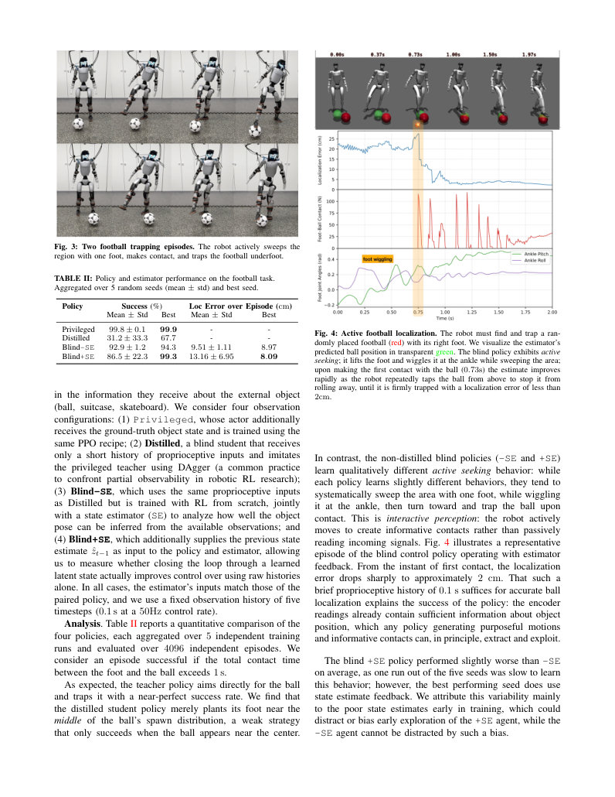
第 6 页Page 6PDF p.6
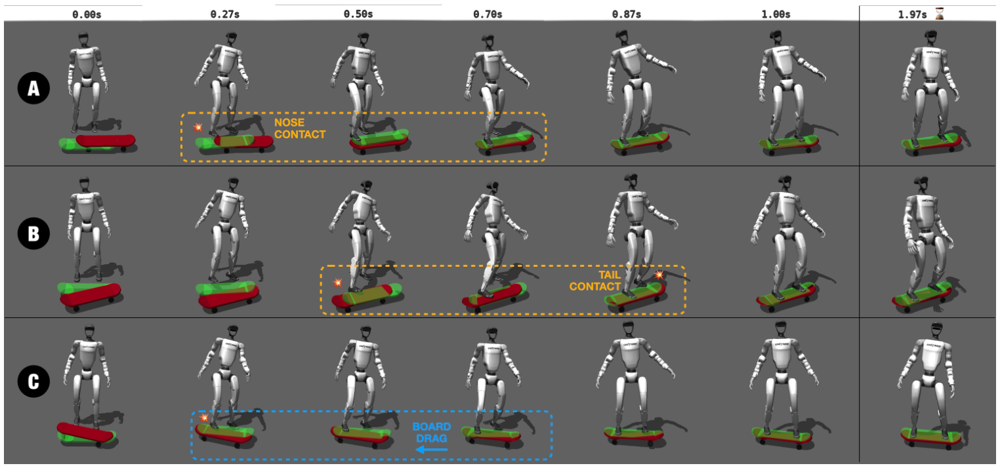
Fig. 5: Blind Skateboard Mounting. We show one blind +SE policy across three episodes with different initial skateboard placements (red); the predicted pose (green) is estimated from the same observations as the policy. At \(0\mathrm{s}\), the estimate is the mean over all possible initial poses. As in the football task, the policy first sweeps the area with one foot to “seek” the skateboard; the pose estimate improves upon first contact. A single touch only reveals the board’s presence at that location; its yaw and extent around the foot remain ambiguous. We then observe two additional interactive perception behaviors linked to further error reduction. First, touching the nose or tail —the inclined semicircular ends—produces a sharp drop in position error along the board’s major axis (Episode A, \(0.27\)–\(0.7\mathrm{s}\)). If the nose is missed, touching the tail with the next foot (Episode B, \(0.87\mathrm{s}\)) yields the same effect. Second, dragging the board reliably induces motion along its major axis, sharply improving the yaw estimate. Across a successful episode, these behaviors generate informative proprioceptive signals that enable accurate skateboard pose estimation.
图 5：盲态滑板上板。我们展示了一个盲 +SE 策略在滑板初始放置位置不同（红色）的三个回合中的表现；预测位姿（绿色）是基于与策略相同的观测进行估计的。在 \(0\mathrm{s}\) 时，估计值是所有可能初始位姿的均值。与足球任务类似，该策略首先用一只脚扫荡该区域以“寻找”滑板；位姿估计在初次接触后得到改善。单次触碰仅能表明滑板在该位置存在；其偏航角以及在脚周围的延伸范围仍然不明确。随后我们观察到与进一步降低误差相关的另外两种交互式感知行为。首先，触碰板头或板尾——即倾斜的半圆形末端——会使沿滑板长轴方向的位置误差急剧下降（回合 A，\(0.27\)–\(0.7\mathrm{s}\)）。若错过了板头，用另一只脚触碰板尾（回合 B，\(0.87\mathrm{s}\)）也能产生同样的效果。其次，拖动滑板能可靠地引发沿其长轴方向的运动，从而显著改善偏航角估计。在整个成功的回合中，这些行为产生了富含信息的本体感知信号，从而实现了精确的滑板位姿估计。
C. Blind Skateboard Mounting
C. 盲态滑板上板
Our third task explores highly dynamic interaction with an underactuated articulated mechanism: a skateboard. Blind people can learn to manipulate a skateboard using proprioception, auditory cues, and cautious exploration [19]. We choose this task because it is unsolved, difficult, and stresses split-second interactive perception through contacts; the policy’s awareness of the board pose must be sufficiently reliable at critical moments, since a stable mount requires placing the feet over specific regions above the trucks (the front and rear “bolts”).
我们的第三个任务探索了与欠驱动铰接机构（滑板）的高动态交互。视障人士可以利用本体感知、听觉线索和谨慎的探索学会操纵滑板 [19]。我们之所以选择这项任务，是因为它尚待解决、难度极高，且极度考验通过接触实现的瞬间交互式感知能力；在关键时刻，策略对滑板位姿的感知必须足够可靠，因为平稳上板要求将双脚放置在桥架上方特定区域（前后“桥钉”螺栓位置）。
At the start of each episode, the skateboard is placed in front of the robot with its center position sampled from a \(0.2\,\mathrm{m} \times 0.5\,\mathrm{m}\) rectangle and yaw sampled over a \(\pm 22.5^{\circ}\) range. The board can roll and slide under the robot’s feet; the policy receives only proprioception. Through a collection of rewards, we specify the objective as stepping onto the skateboard with both feet above the bolts to achieve a stable, balanced configuration. An episode is considered successful if both feet remain simultaneously on the deck for at least \(2~\mathrm{s}\). In this task, the state estimator predicts not only the 3D position of the skateboard, but also a continuous 6D representation of its orientation [20].
在每个回合开始时，滑板放置在机器人前方，其中心位置在 \(0.2\,\mathrm{m} \times 0.5\,\mathrm{m}\) 的矩形范围内采样，偏航角在 \(\pm 22.5^{\circ}\) 范围内采样。滑板可以在机器人双足下滑动和滚动；策略仅接收本体感知信号。通过一组奖励函数，我们将目标指定为双脚踏上滑板并位于桥钉上方，以实现稳定平衡的构型。若双脚同时停留在板面上至少 \(2~\mathrm{s}\)，则视为该回合成功。在该任务中，状态估计器不仅预测滑板的 3D 位置，还预测其姿态朝向的连续 6D 表示 [20]。
The dominant task rewards place the feet near prescribed front and rear deck locations, center the torso above the skateboard, and keep the deck level; additional terms encourage balance and smooth motion. The twelve-second training episodes terminate on falls, non-foot body contacts, excessive foot–board forces or sliding, excessive skateboard
主要任务奖励促使双足落在规定的板面前后指定位置附近、将躯干保持在滑板正上方居中，并保持板面水平；附加项则鼓励维持平衡与平滑运动。为期十二秒的训练回合在发生跌倒、非足部身体接触、足-板受力或滑动过大、滑板过度
displacement or tilt, or failure to satisfy the foot-lift and contact-timing constraints.
位移或倾斜、或未能满足抬脚与接触时间约束时终止。
Analysis . Table III shows that the privileged-input baseline is highly seed-sensitive (\(28.1\pm39.1\%\); best \(95.9\%\)). Because it is trained with the same PPO recipe as the other variants, we treat it as a diagnostic baseline rather than an empirical upper bound and draw no conclusion from its low mean. The distilled policy succeeds mainly when the skateboard spawns near the center of the reset distribution. In contrast, both blind variants learn active contact strategies—seeking, nose/tail contact, and dragging—that coincide with progressive reductions in the separately trained estimator’s boardpose error (Fig. 5).
分析。表 III 显示特权输入基线对随机种子高度敏感（\(28.1\pm39.1\%\)；最佳 \(95.9\%\)）。由于它是使用与其他变体相同的 PPO 配方进行训练的，我们将其作为诊断基线而非经验上限，且不对其偏低的平均值做推论。蒸馏策略主要在滑板生成于重置分布中心附近时才能成功。相反，两种盲变体均学到了主动接触策略——搜寻、板头/板尾接触以及拖动——这些策略与单独训练的估计器对滑板位姿误差的逐步下降相吻合（图 5）。
In recent work, DHAL [21]—whose skateboard model we adapt in our work—achieved impressive skateboarding skills with a quadruped, but kept one foot mechanically attached to the board’s deck. HUSKY [22] demonstrated humanoid skateboard steering and pushing, but initialized the robot with one foot already resting at a known position on the board, assuming an a-priori known skateboard pose. Our approach breaks the strict reliance on initial conditions by interactively perceiving the skateboard. Because active seeking has variable completion times, blind policies like ours cannot be straightforwardly trained using mimic-based approaches designed around time-aligned reference trajectories.
在近期的工作中，DHAL [21]（我们在本工作中采用了其滑板模型）在四足机器人上实现了令人瞩目的滑板技能，但其一只脚机械地固定在滑板面上。HUSKY [22] 展示了人形机器人的滑板转向和蹬板助推，但在初始化时机器人的一只脚已经置于滑板上的已知位置，并假定滑板位姿先验已知。我们的方法通过对滑板进行交互式感知，打破了对初始条件的严格依赖。由于主动搜寻所需的时间是不固定的，像我们这样的盲策略无法直接使用围绕时间对齐的参考轨迹设计的模仿方法来训练。
D. Gentle Blind Manipulation (Suitcase)
D. 轻柔盲操作（行李箱）
Our final task combines blind exploration of an occluded affordance with the need for gentle physical interaction:
我们的最后一个任务将对被遮挡示能的主动盲探索与轻柔物理交互的需求相结合：
展开第 6 页原版整页（含全部图表、公式与页眉页脚）
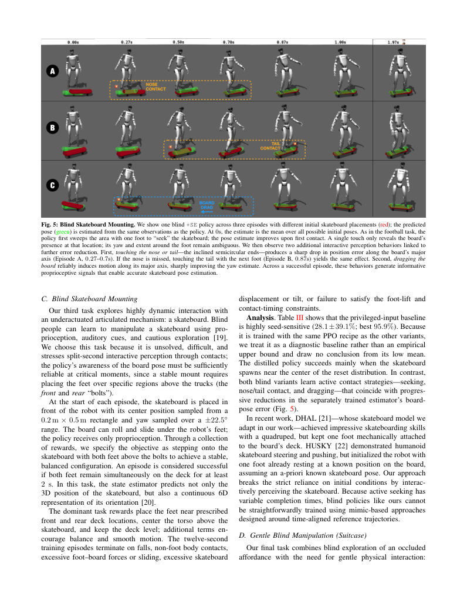
第 7 页Page 7PDF p.7
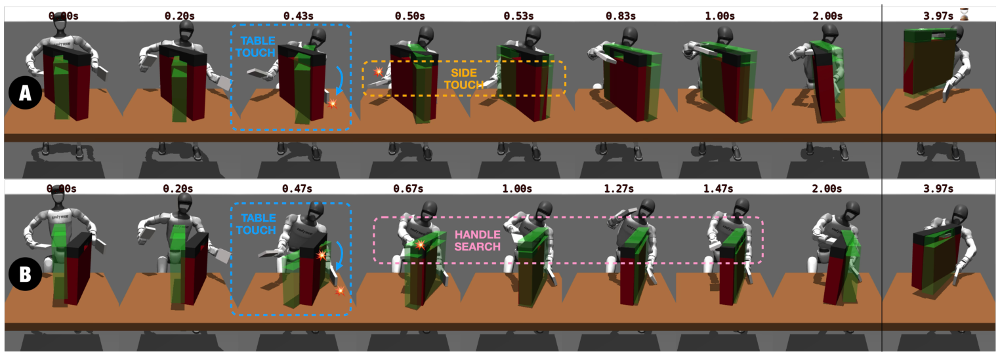
Fig. 6: Blind Suitcase Lifting . We inspect the blind policy’s behavior over two episodes with different suitcase (red) sizes, positions, and table heights. The predicted suitcase pose and size (green) is estimated from the same proprioceptive observations that the policy receives. Until \(0.43\mathrm{s}\), the estimate is identical; it is the average of all initial suitcase poses during training. The policy first gently touches the table with the left “hand” (\(0.43-0.47\mathrm{s}\)); the estimator instantly localizes the predicted suitcase vertically to lie on the true table surface. It then touches the suitcase with one or both hands from the sides, which strongly improves the complete pose estimate. Next, the robot waves its right hand near the top edge of the suitcase and searches repeatedly for the handle’s opening. Once the handle is “felt”, it commences insertion and lifting.
图 6：盲态提举行李箱。我们考察了盲策略在行李箱（红色）尺寸、位置和桌面高度不同的两个回合中的行为。预测的行李箱位姿与尺寸（绿色）是基于策略接收到的相同本体感知观测估计得出的。在 \(0.43\mathrm{s}\) 之前，估计值完全相同；它是训练期间所有初始行李箱位姿的均值。策略首先用左“手”轻触桌面（\(0.43-0.47\mathrm{s}\)）；估计器随即在垂直方向上定位预测的行李箱，使其落在真实的桌面上。随后，它用一只或双手从侧面触碰行李箱，从而显著改善了整体位姿估计。接着，机器人在行李箱顶边缘附近挥动右手，反复搜寻把手的开口。一旦“感觉”到了把手，便开始将手插入并提起。
TABLE III: Policy and estimator performance on the skateboard task. Aggregated over 5 random seeds (mean \(\pm\) std) and best seed.
表 III：滑板任务中的策略与估计器性能。基于 5 个随机种子汇总（均值 \(\pm\) 标准差）及最佳种子结果。
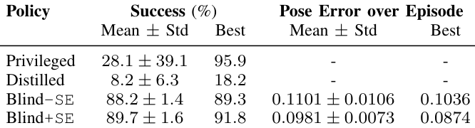
the robot must locate the recessed top handle and lift the slender suitcase without causing it to tip over. In contrast to previous tasks, even moderate exploratory forces are sufficient to destabilize the object, making gentle exploration important. To address this, we also ablate a variable-stiffness (+VS) variant that outputs per-joint gain-scaling coefficients to adapt arm stiffness during exploration.
机器人必须找到凹陷的顶部把手并提起细长的行李箱，同时避免其倾倒。与先前的任务不同，在此任务中即使是适度的探索力也足以破坏物体的稳定性，因此轻柔的探索至关重要。为了解决这一问题，我们还对变刚度（+VS）变体进行了消融实验，该变体输出每个关节的增益缩放系数，以在探索过程中自适应调整手臂刚度。
At reset, the suitcase is sampled over a \(0.2\,\mathrm{m}\times0.2\,\mathrm{m}\) planar region and \(\pm45^{\circ}\) yaw on a height-randomized table; its height and mass are also randomized. The dominant task rewards bring the right hand to the handle gap, align it for insertion, establish handle contact, and lift the suitcase clear of the table. The eight-second episodes terminate on falls, both feet leaving the ground, excessive foot sliding or joint velocity, excessive suitcase tilt, or illegal body/table contacts. Besides object pose, this task includes the suitcase’s size as an additional state estimation target. We reuse the observation configurations from Sec. V-B and ablate \(\pm\) SE and \(\pm\) VS.
在重置时，行李箱在高度随机化的桌面上以 \(0.2\,\mathrm{m}\times0.2\,\mathrm{m}\) 的平面区域和 \(\pm45^{\circ}\) 偏航角进行采样；其高度和质量也是随机的。主要的任务奖励引导右手移向把手间隙、对准以便插入、建立把手接触，并将行李箱完全提起脱离桌面。时长 8 秒的 episode 在发生跌倒、双脚离地、足部过度滑动或关节速度过大、行李箱过度倾斜或发生非法的身体/桌面接触时终止。除物体位姿外，该任务还将行李箱的尺寸作为额外的状态估计目标。我们复用了第 V-B 节的观测配置，并对 \(\pm\) SE 和 \(\pm\) VS 进行了消融实验。
Analysis. Table IV yields three clear takeaways. The privileged-input policy performs best, while the distilled policy performs worst. As the privileged policy has perfect information about the handle’s position, it moves its hand directly towards the handle; a behavior that the distilled student struggles to imitate, causing it to frequently knock the suitcase over. In contrast, the other blind policies are
分析。表 IV 得出了三个明确的结论。特权输入策略表现最佳，而蒸馏策略表现最差。由于特权策略掌握有关把手位置的完美信息，它会直接将手移向把手；蒸馏得到的学生策略难以模仿这一行为，导致其频繁撞翻行李箱。相比之下，其他盲策略则
able to find the handle in the majority of cases, with variable stiffness (+VS) consistently reducing tipping by \(\sim4--5\) percentage points. Third, feeding back the state estimate (+SE) provides no consistent benefit here—the raw proprioceptive history appears sufficient for control—though +VS+SE achieves the best single-seed success (\(90.3\%\)) and the least estimation error. As before, the policies adopt diverse strategies; we observe that the fixed-stiffness (-VS) policies tend to repeatedly “tap” the suitcase with the right hand until the insertion, whereas the softer +VS policies tend to slide the hand along one side until the handle is felt. We inspect one such policy in Fig. 6.
能够在绝大多数情况下找到把手，其中变刚度（+VS）始终使倾倒率降低约 4–5 个百分点。第三，在此处反馈状态估计（+SE）并没有带来一致的收益——原始本体感觉历史信息对于控制似乎已经足够——尽管 +VS+SE 取得了最佳的单种子成功率（\(90.3\%\)）和最小的估计误差。与之前一样，各策略采取了多样化的策略；我们观察到固定刚度（-VS）策略往往会用右手反复“轻敲”行李箱直至插入，而更柔顺的 +VS 策略往往会使手沿一侧滑动，直到感知到把手为止。我们在图 6 中对其中一种策略进行了考察。
TABLE IV: Suitcase evaluation results aggregated over seeds (mean \(\pm\) std).
表 IV：基于随机种子汇总的行李箱评估结果（均值 \(\pm\) 标准差）。
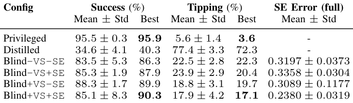
VI. DISCUSSION AND LIMITATIONS
VI. 讨论与局限性
Cross-task findings. Across all object-interaction tasks, three consistent patterns emerged. First, blind-from-scratch policies reliably outperformed distilled students: distillation yielded brittle policies that struggle in pre-contact stages lacking object-influenced proprioception, consistent with prior findings that student-teacher methods break down when exploration is required [3]. Second, explicit state-estimator feedback (+SE) provided no consistent mean improvement: its effects were small or seed-sensitive across football, skateboard, and suitcase. This suggests that short raw histories often suffice for control, while inaccurate estimates early in
跨任务发现。在所有物体交互任务中，浮现出三个一致的模式。首先，从头训练的纯盲策略可靠地优于蒸馏学生策略：蒸馏产生了脆弱的策略，这些策略在缺乏受物体影响的本体感觉的接触前阶段举步维艰，这与先前关于在需要探索时师生方法会失效的发现相一致 [3]。其次，显式状态估计器反馈（+SE）没有带来一致的平均改善：在足球、滑板和行李箱任务中，其效果微弱或对随机种子敏感。这表明简短的原始历史信息通常足以满足控制需求，而在训练早期不准确的估计
展开第 7 页原版整页（含全部图表、公式与页眉页脚）
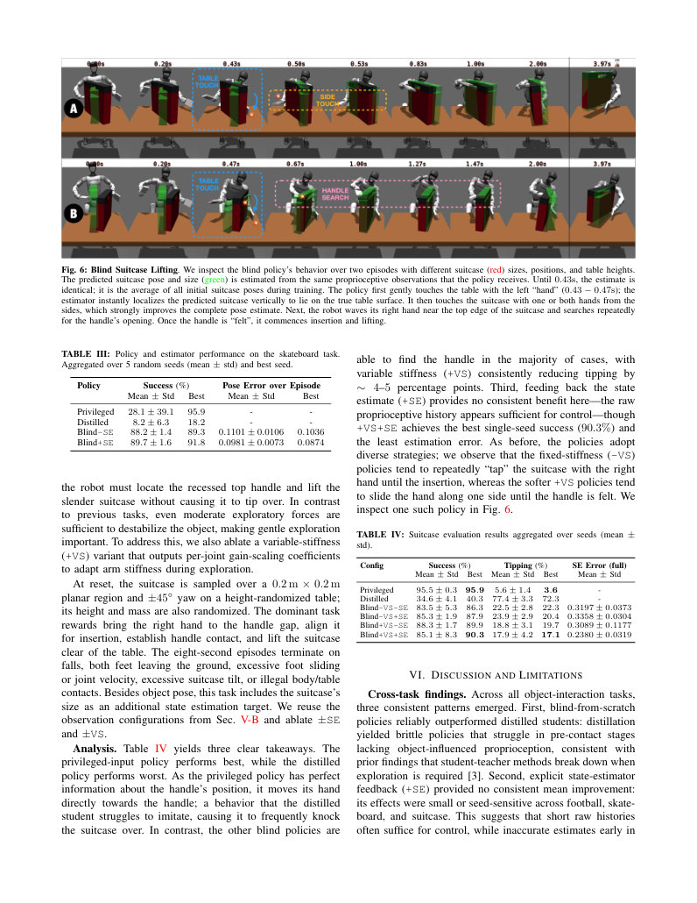
第 8 页Page 8PDF p.8
training can occasionally hinder optimization. Third, within the task-specific object families considered here, estimation errors dropped systematically after informative contacts, showing that task-relevant object state becomes decodable from encoder-based proprioceptive histories even though estimator accuracy is not rewarded.
有时会阻碍优化。第三，在本文考虑的特定任务物体族内，在发生提供有效信息的接触后，估计误差系统性地下降，这表明即使未对估计器的准确性给予奖励，与任务相关的物体状态也可以从基于编码器的本体感觉历史中被解码出来。
Passive and active sensing. Our findings suggest that encoder-based proprioception, combined with compliant actuation, supports a surprisingly broad range of blind locomanipulation behaviors. However, this contact-sensing channel has important limitations. The spatial resolution is extremely low: tracking errors are defined at joints, not at points on the robot surface, and multiple contact configurations can produce similar deflection patterns, making precise contact localization challenging compared to systems with dense tactile skins. Nevertheless, purposeful contact allows policies to actively sample the environment, making task relevant object state progressively more decodable from their proprioceptive histories.
被动与主动感知。我们的研究结果表明，基于编码器的本体感觉与柔顺驱动相结合，能够支持范围惊人广泛的纯盲移动操作行为。然而，这种接触感知通道存在显著的局限性。其空间分辨率极低：跟踪误差是定义在关节处而非机器人表面各点上的，而且多种接触构型可能会产生相似的偏转模式，与具有高密度触觉皮肤的系统相比，精确的接触定位极具挑战性。尽管如此，有目的的接触使策略能够主动对环境进行采样，从而使其本体感觉历史中与任务相关的物体状态变得越来越容易解码。
Sim-to-real transfer. Our indirect perception of objects depends on actuators and contacts behaving similarly to the simulation: mismatches in PD dynamics, friction, and compliance can alter the relationship between commands, encoder residuals, and contact. Domain randomization mitigates but does not eliminate this gap. We deploy a policy for each task on the physical Unitree G1 and qualitatively report the corresponding behaviors and representative failures shown in the supplementary video. Because these trials were collected as demonstrations rather than under a fixed protocol, the simulation tables provide our quantitative evaluation; the hardware results establish transfer feasibility, not a reliability estimate.
仿真到现实迁移。我们对物体的间接感知取决于执行器和接触在表现上与仿真具有相似性：PD 动力学、摩擦力和柔顺性方面的不匹配会改变控制指令、编码器残差与接触之间的关系。域随机化缓解了但并未消除这一差距。我们在实物 Unitree G1 上为每个任务部署了策略，并在补充视频中定性报告了相应的行为和典型失败案例。由于这些试验是作为演示而非在固定协议下采集的，因此仿真表格提供了我们的定量评估；硬件实验结果确立了迁移的可行性，而非可靠性估计。
Scaling up. Our fixed-window MLPs cannot integrate evidence across distant contacts, and the MSE-trained estimators collapse ambiguous beliefs to point estimates. Longermemory architectures and probabilistic state estimators could instead support uncertainty-aware evidence accumulation and contact selection.
扩展性。我们采用的固定窗口 MLP 无法整合时间跨度较远的接触证据，而基于 MSE 训练的估计器会将存在歧义的信念坍缩为点估计。相比之下，具有更长记忆的架构和概率状态估计器则能够支持感知不确定性的证据积累和接触选择。
VII. CONCLUSION
VII. 结论
We demonstrated that joint encoder-based proprioception, combined with compliant actuation, is a practical and surprisingly capable substrate for blind whole-body locomanipulation on a commercial humanoid robot. By treating PD-controller tracking deviations as a contact-sensing channel, trained policies exhibit interactive perception: they actively probe the environment, making task-relevant object state increasingly decodable from short proprioceptive histories alone. Across all object-interaction tasks, blind policies trained from scratch consistently outperformed distilled students, which exploit the distribution of initial object positions rather than learning active search—highlighting a key failure mode of imitation in partially observable settings. These results position encoder feedback as a strong baseline on any platform with compliant actuation, and a natural foundation on which richer sensing—vision, dedicated tactile hardware—can be layered.
我们证明了基于关节编码器的本体感觉与柔顺驱动相结合，是商用人形机器人进行纯盲全身移动操作的一种实用且能力出众的基础架构。通过将 PD 控制器的跟踪偏差作为接触感知通道，训练出的策略展现出了交互式感知：它们主动探测环境，使得仅凭简短的本体感觉历史就能使与任务相关的物体状态变得越来越容易解码。在所有物体交互任务中，从头训练的纯盲策略始终优于蒸馏学生策略，后者利用了初始物体位置的分布而非学习主动搜索——这凸显了模仿在部分可观测环境中存在的一个关键失效模式。这些结果将编码器反馈确立为任何具有柔顺驱动平台上的强基线，也是叠加视觉、专用触觉硬件等更丰富感知模态的天然基础。
- [1] J. Siekmann, K. Green, J. Warila, A. Fern, and J. Hurst, “Blind bipedal stair traversal via sim-to-real reinforcement learning,” in Robotics: Science and Systems XVII , Jul. 2021.
- [1] J. Siekmann, K. Green, J. Warila, A. Fern, and J. Hurst, “Blind bipedal stair traversal via sim-to-real reinforcement learning,” in Robotics: Science and Systems XVII , Jul. 2021.
- [2] C. Chi, Z. Xu, S. Feng, E. Cousineau, Y. Du, B. Burchfiel, R. Tedrake, and S. Song, “Diffusion policy: Visuomotor policy learning via action diffusion,” The International Journal of Robotics Research , vol. 44, no. 10-11, pp. 1684–1704, 2025.
- [2] C. Chi, Z. Xu, S. Feng, E. Cousineau, Y. Du, B. Burchfiel, R. Tedrake, and S. Song, “Diffusion policy: Visuomotor policy learning via action diffusion,” The International Journal of Robotics Research , vol. 44, no. 10-11, pp. 1684–1704, 2025.
- [3] A. Kumar, Z. Fu, D. Pathak, and J. Malik, “Rma: Rapid motor adaptation for legged robots,” in Robotics: Science and Systems XVII , ser. RSS2021. Robotics: Science and Systems Foundation, Jul. 2021.
- [3] A. Kumar, Z. Fu, D. Pathak, and J. Malik, “Rma: Rapid motor adaptation for legged robots,” in Robotics: Science and Systems XVII , ser. RSS2021. Robotics: Science and Systems Foundation, Jul. 2021.
- [4] A. Kumar, Z. Li, J. Zeng, D. Pathak, K. Sreenath, and J. Malik, “Adapting rapid motor adaptation for bipedal robots,” in 2022 IEEE/RSJ International Conference on Intelligent Robots and Systems (IROS) . IEEE, Oct. 2022, p. 1161–1168.
- [4] A. Kumar, Z. Li, J. Zeng, D. Pathak, K. Sreenath, and J. Malik, “Adapting rapid motor adaptation for bipedal robots,” in 2022 IEEE/RSJ International Conference on Intelligent Robots and Systems (IROS) . IEEE, Oct. 2022, p. 1161–1168.
- [5] Y. Liang, K. Ellis, and J. Henriques, “Rapid motor adaptation for robotic manipulator arms,” in 2024 IEEE/CVF Conference on Computer Vision and Pattern Recognition (CVPR) . IEEE, Jun. 2024, p. 16404–16413.
- [5] Y. Liang, K. Ellis, and J. Henriques, “Rapid motor adaptation for robotic manipulator arms,” in 2024 IEEE/CVF Conference on Computer Vision and Pattern Recognition (CVPR) . IEEE, Jun. 2024, p. 16404–16413.
- [6] W. Fu, H. Li, I. X. He, S. Tellex, and S. Sridhar, “Unitac: Whole-robot touch sensing without tactile sensors,” in Sense of Space: Multi-Sensory Modeling for Embodied Intelligence , 2026, cVPR 2026 Workshop paper. [Online]. Available: https: //openreview.net/forum?id=UUFzZWd0N8
- [6] W. Fu, H. Li, I. X. He, S. Tellex, and S. Sridhar, “Unitac: Whole-robot touch sensing without tactile sensors,” in Sense of Space: Multi-Sensory Modeling for Embodied Intelligence , 2026, cVPR 2026 Workshop paper. [Online]. Available: https: //openreview.net/forum?id=UUFzZWd0N8
- [7] M. Iskandar, A. Albu-Sch¨affer, and A. Dietrich, “Intrinsic sense of touch for intuitive physical human-robot interaction,” Science Robotics , vol. 9, no. 93, p. eadn4008, 2024.
- [7] M. Iskandar, A. Albu-Sch¨affer, and A. Dietrich, “Intrinsic sense of touch for intuitive physical human-robot interaction,” Science Robotics , vol. 9, no. 93, p. eadn4008, 2024.
- [8] G. B. Margolis, M. Wang, N. Fey, and P. Agrawal, “Softmimic: Learning compliant whole-body control from examples,” arXiv preprint arXiv:2510.17792 , 2025.
- [8] G. B. Margolis, M. Wang, N. Fey, and P. Agrawal, “Softmimic: Learning compliant whole-body control from examples,” arXiv preprint arXiv:2510.17792 , 2025.
- [9] Q. Lu, Y. Feng, B. Shi, M. Piseno, Z. Bao, and C. K. Liu, “Gentlehumanoid: Learning upper-body compliance for contactrich human and object interaction,” 2025. [Online]. Available: https://arxiv.org/abs/2511.04679
- [9] Q. Lu, Y. Feng, B. Shi, M. Piseno, Z. Bao, and C. K. Liu, “Gentlehumanoid: Learning upper-body compliance for contactrich human and object interaction,” 2025. [Online]. Available: https://arxiv.org/abs/2511.04679
- [10] E. Miller, T. McInroe, D. Abel, O. M. Aodha, and S. Vijayakumar, “Enhancing tactile-based reinforcement learning for robotic control,” in The Thirty-ninth Annual Conference on Neural Information Processing Systems , 2025.
- [10] E. Miller, T. McInroe, D. Abel, O. M. Aodha, and S. Vijayakumar, “Enhancing tactile-based reinforcement learning for robotic control,” in The Thirty-ninth Annual Conference on Neural Information Processing Systems , 2025.
- [11] W. Yuan, S. Dong, and E. Adelson, “Gelsight: High-resolution robot tactile sensors for estimating geometry and force,” Sensors , vol. 17, no. 12, p. 2762, Nov. 2017.
- [11] W. Yuan, S. Dong, and E. Adelson, “Gelsight: High-resolution robot tactile sensors for estimating geometry and force,” Sensors , vol. 17, no. 12, p. 2762, Nov. 2017.
- [12] N. Funk, E. Helmut, G. Chalvatzaki, R. Calandra, and J. Peters, “Evetac: An event-based optical tactile sensor for robotic manipulation,” IEEE Transactions on Robotics , vol. 40, pp. 3812–3832, 2024.
- [12] N. Funk, E. Helmut, G. Chalvatzaki, R. Calandra, and J. Peters, “Evetac: An event-based optical tactile sensor for robotic manipulation,” IEEE Transactions on Robotics , vol. 40, pp. 3812–3832, 2024.
- [13] Q. Li, O. Kroemer, Z. Su, F. F. Veiga, M. Kaboli, and H. J. Ritter, “A review of tactile information: Perception and action through touch,” IEEE Transactions on Robotics , vol. 36, no. 6, pp. 1619–1634, 2020.
- [13] Q. Li, O. Kroemer, Z. Su, F. F. Veiga, M. Kaboli, and H. J. Ritter, “A review of tactile information: Perception and action through touch,” IEEE Transactions on Robotics , vol. 36, no. 6, pp. 1619–1634, 2020.
- [14] T. Schneider, C. de Farias, R. Calandra, L. Chen, and J. Peters, “Active perception for tactile sensing: A task-agnostic attention-based approach,” in German Robotics Conference (GRC) , 2025.
- [14] T. Schneider, C. de Farias, R. Calandra, L. Chen, and J. Peters, “Active perception for tactile sensing: A task-agnostic attention-based approach,” in German Robotics Conference (GRC) , 2025.
- [15] J. Sinapov, T. Bergquist, C. Schenck, U. Ohiri, S. Griffith, and A. Stoytchev, “Interactive object recognition using proprioceptive and auditory feedback,” The International Journal of Robotics Research , vol. 30, no. 10, p. 1250–1262, Aug. 2011.
- [15] J. Sinapov, T. Bergquist, C. Schenck, U. Ohiri, S. Griffith, and A. Stoytchev, “Interactive object recognition using proprioceptive and auditory feedback,” The International Journal of Robotics Research , vol. 30, no. 10, p. 1250–1262, Aug. 2011.
- [16] C. Schwarke, M. Mittal, N. Rudin, D. Hoeller, and M. Hutter, “Rsl-rl: A learning library for robotics research,” arXiv preprint arXiv:2509.10771 , Sep. 2025.
- [16] C. Schwarke, M. Mittal, N. Rudin, D. Hoeller, and M. Hutter, “Rsl-rl: A learning library for robotics research,” arXiv preprint arXiv:2509.10771 , Sep. 2025.
- [17] Y.-H. Han and B.-K. Cho, “Slope walking of humanoid robot without imu sensor on an unknown slope,” Robotics and Autonomous Systems , vol. 155, p. 104163, Sep. 2022.
- [17] Y.-H. Han and B.-K. Cho, “Slope walking of humanoid robot without imu sensor on an unknown slope,” Robotics and Autonomous Systems , vol. 155, p. 104163, Sep. 2022.
- [18] “RoK-3 humanoid robot,” https://rclab.kookmin.ac.kr/project1/ humanoid-robot-rok-3, accessed: 2026-03-05.
- [18] “RoK-3 humanoid robot,” https://rclab.kookmin.ac.kr/project1/ humanoid-robot-rok-3, accessed: 2026-03-05.
- [19] D. Mancina, “Meet blind skateboarder dan mancina,” Video, 2018, red Bull feature on blind skateboarding. [Online]. Available: https://www.youtube.com/watch?v=jPPdFB2V7nA
- [19] D. Mancina, “Meet blind skateboarder dan mancina,” Video, 2018, red Bull feature on blind skateboarding. [Online]. Available: https://www.youtube.com/watch?v=jPPdFB2V7nA
- [20] Y. Zhou, C. Barnes, J. Lu, J. Yang, and H. Li, “On the continuity of rotation representations in neural networks,” in Proceedings of the IEEE/CVF Conference on Computer Vision and Pattern Recognition (CVPR) , 2019, pp. 5745–5753.
- [20] Y. Zhou, C. Barnes, J. Lu, J. Yang, and H. Li, “On the continuity of rotation representations in neural networks,” in Proceedings of the IEEE/CVF Conference on Computer Vision and Pattern Recognition (CVPR) , 2019, pp. 5745–5753.
- [21] H. Liu, S. Teng, B. Liu, W. Zhang, and M. Ghaffari, “Discrete-time hybrid automata learning: Legged locomotion meets skateboarding,” in Robotics: Science and Systems XXI , ser. RSS2025. Robotics: Science and Systems Foundation, Jun. 2025.
- [21] H. Liu, S. Teng, B. Liu, W. Zhang, and M. Ghaffari, “Discrete-time hybrid automata learning: Legged locomotion meets skateboarding,” in Robotics: Science and Systems XXI , ser. RSS2025. Robotics: Science and Systems Foundation, Jun. 2025.
展开第 8 页原版整页（含全部图表、公式与页眉页脚）
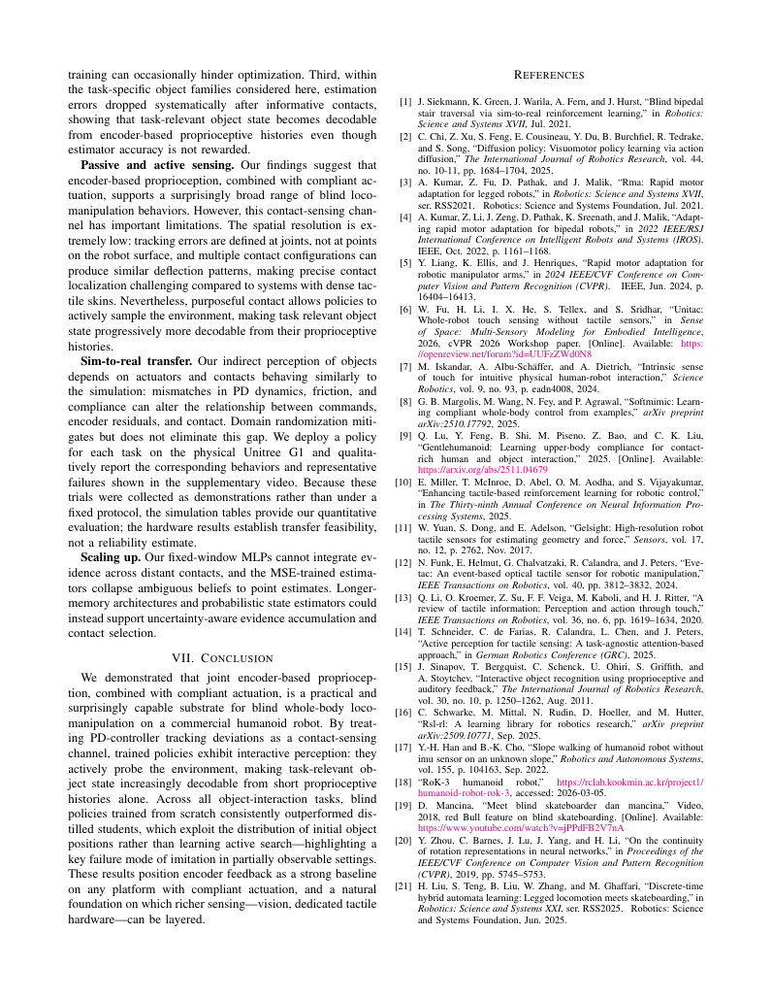
第 9 页Page 9PDF p.9
[22] J. Han, D. Wang, C. Zhang, X. Liu, P. Luo, C. Bai, and X. Li, “Husky: Humanoid skateboarding system via physics-aware wholebody control,” arXiv preprint arXiv:2602.03205 , 2026.
[22] J. Han, D. Wang, C. Zhang, X. Liu, P. Luo, C. Bai, and X. Li, “Husky: Humanoid skateboarding system via physics-aware wholebody control,” arXiv preprint arXiv:2602.03205 , 2026.